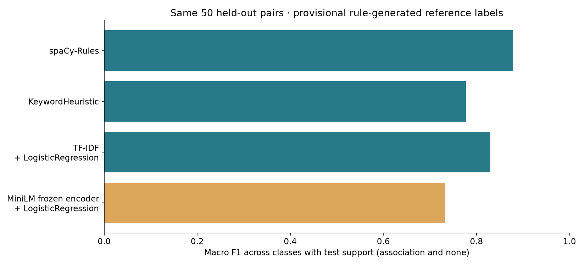
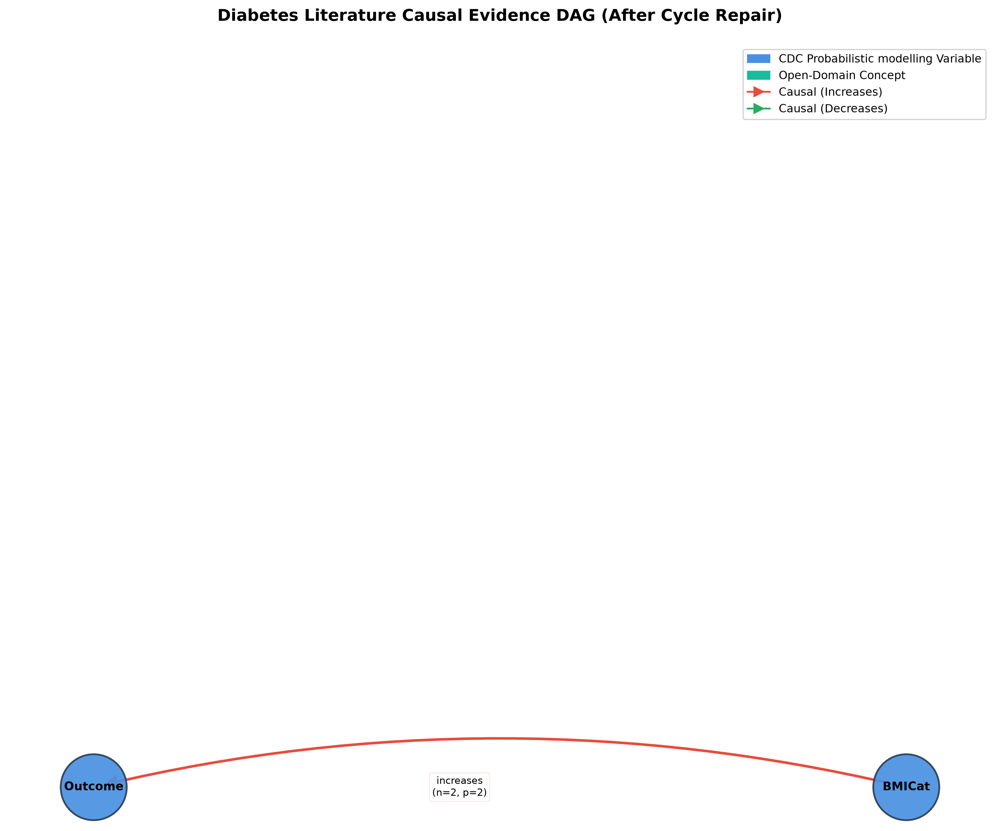
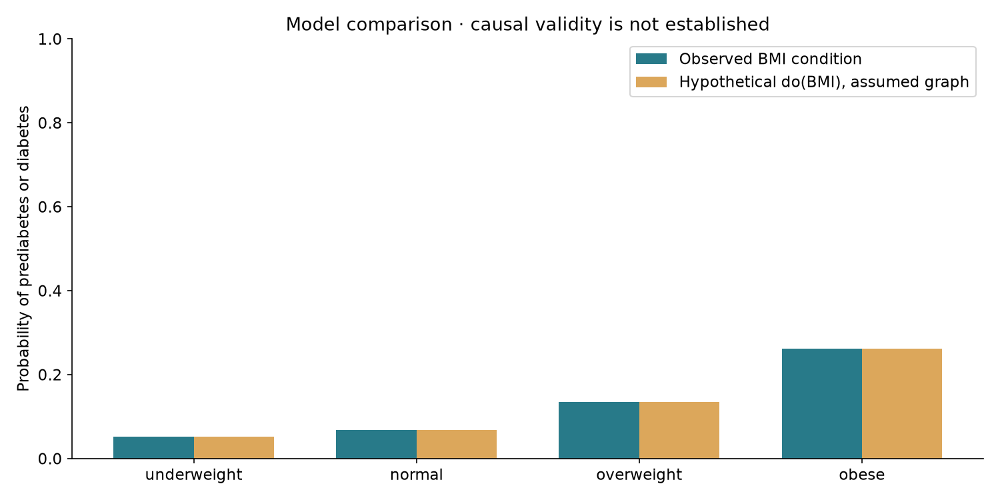

Biomedical text → evidence DAG → Bayesian probabilities → hypothetical interventions
Diabetes evidence, explored
CDC BRFSS 2015 · real observations
Human validation: pending. The graph is a project-accepted structural prior. Causal validity is not established. Estimates are unweighted respondent probabilities, not population prevalence or clinical advice.
1. Extract relationships from biomedical text
500 frozen abstracts verified by hash. Samples below show actual extractor outputs with their original train/test partition. A predicted causal claim does not establish biological causation.
For a new sentence: ./run.sh predict-text --text "Obesity causes type 2 diabetes."
2. Compare rules, traditional ML, and a real transformer
Each method is evaluated on the same fixed document holdout. TF-IDF and MiniLM use the same logistic classifier settings and training pairs. MiniLM loads actual pretrained transformer weights; the encoder is frozen and its classifier head is trained. The keyword heuristic is separately labelled.
| Method | Primary: supported-class macro F1 | Secondary: 3-class macro F1 | Causal generalization |
|---|
| spaCy-Rules | 0.8786 | 0.5857 | Unmeasured (0 examples) |
| KeywordHeuristic | 0.7772 | 0.5181 | Unmeasured (0 examples) |
| TF-IDF + LogisticRegression | 0.8300 | 0.5533 | Unmeasured (0 examples) |
| MiniLM frozen encoder + LogisticRegression | 0.7326 | 0.4884 | Unmeasured (0 examples) |

Reference metadata records rule_heuristic_regex_v1, not verified expert labels or a verified exact generator implementation. Evaluating related rules against these labels may be circular. Supported-class macro F1 is primary; the three-class aggregate is retained as a secondary compatibility metric. There are no causal examples in dev/test. These results do not establish independent clinical accuracy or held-out causal extraction ability. LLM pilots use different subsets and are excluded from this fair comparison.
Protocol, split IDs, support counts, timing and limitations · Comparison table · Per-split error analysis
3. Trace the evidence-backed DAG
Only causal claims with direction survive conservative context filters. Associations stay in a separate undirected graph. Unique papers and sentences are counted separately from extractor agreement. Learned class-only predictions are not silently promoted to directed graph edges.

31 observational association edges are preserved separately.
BMICat → Outcome
2 unique papers; 2 evidence sentences. Project-accepted structural prior; human validation pending.
Crucially, MR analysis identifies abdominal obesity, quantified by waist circumference, as the dominant causal link between NAFLD and T2DM.
PMID 41424208
Pediatric obesity is a growing global concern because it leads to an increased prevalence of abnormal glucose metabolism, including dysglycemia, prediabetes, and type 2 diabetes.
PMID 42415555
DAG GraphML · Full citation provenance
4. Estimate Bayesian probabilities
401,327 observations retained. Only the imported BMI → Outcome relationship is included in the default model. Outcome combines self-reported prediabetes and diabetes.

5. Compare observation and intervention
Observation selects respondents in a category. Intervention replaces the BMI mechanism in the assumed model. Equal results in this sparse graph follow from its lack of confounders; they do not prove absence of real confounding.

6. Evaluate predictions and limitations
Log loss: 0.39641 · Brier score: 0.12048. These assess observational prediction, not causal accuracy.

Calibration is assessed only in populated prediction bins. Higher-risk ranges without predictions are unmeasured; good observed calibration is not causal validation.